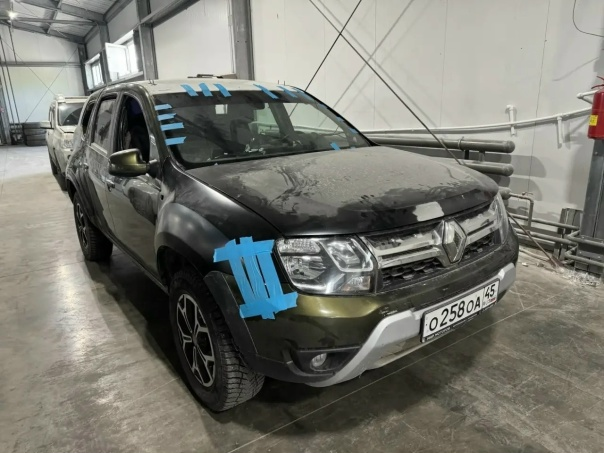

Восстанавливаем форму кузова после вмятин и деформаций. Вытягиваем металл, а не маскируем его шпатлёвкой.
Фотографии из нашего цеха. Больше проектов — в галерее работ и в группе ВКонтакте.



Жестяные работы — это восстановление формы металлического кузова: рихтовка вмятин, вытяжка деформаций, устранение «складок» после ДТП и подготовка поверхности под покраску. В «ГЕОМЕТРИИ КУЗОВА» на ул. Каслинской 1/1 мы работаем с металлом любой сложности, используя ручной инструмент, споттер и профессиональное оборудование. Задача мастера — вернуть панели заводскую геометрию и зазоры, а не «налепить шпакли» побольше.
Кузовщик-жестянщик возвращает форму металлу, поэтому к нему обращаются при:
Металл обладает памятью формы, поэтому мастеру важно не растянуть его ещё сильнее. Мы работаем по принципу «от большого к малому»:
Распространённая ошибка мастеров-«быстроделов» — спрятать вмятину под толстым слоем шпатлёвки. Через год-два такое покрытие трескается и отваливается вместе с краской. Мы стараемся вытянуть металл максимально близко к исходной форме, а шпатлю используем только как финишный выравнивающий слой. Это занимает больше времени, зато результат держится годами и не боится мойки и перепадов температур. Именно поэтому мы не берём работу «на скорость в ущерб качеству».
Цена зависит от количества и глубины вмятин, доступа к повреждённой зоне и того, требуется ли покраска. Ориентировочные расценки:
| Работа | Цена |
|---|---|
| Рихтовка одной вмятины | от 3 000 ₽ |
| Рихтовка детали с покраской | от 12 000 ₽ |
| Вытяжка металла споттером | от 3 500 ₽ |
| Восстановление зазоров и геометрии панели | от 5 000 ₽ |
Срок — от 1 дня. Сложные деформации после ДТП могут занять 2–4 дня с учётом покраски.
Если удар был сильным, одной рихтовкой не обойтись: металл растянут, силовые элементы смещены, зазоры «уехали». В таких случаях мы сначала восстанавливаем геометрию кузова на стапеле, а затем занимаемся жестью и покраской. Так делали, например, при восстановлении Chevrolet Camaro: сначала вернули кузову заводские параметры, заменили крыло и усилители, выполнили точечную сварку и антикоррозийную обработку. А для Renault Duster «перевёртыша» сочетали замену повреждённых панелей, ювелирную рихтовку и полную покраску кузова.
Мы не обещаем «сделать незаметно за час», но гарантируем, что металл будет восстановлен по технологии, а не замаскирован. Приезжайте на бесплатную дефектовку на ул. Каслинскую 1/1 или пришлите фото повреждения — оценим объём работ и назовём стоимость. Звоните: +7 (922) 632-60-30 или +7 (351) 683-12-05. Работаем ежедневно с 10:00 до 20:00.
После жестяных работ и покраски мы советуем первые 2–3 недели не мыть зону ремонта под высоким давлением и не наносить на неё воск: лак должен окончательно полимеризоваться. Дальше за поверхностью можно ухаживать как обычно — покрытие ведёт себя так же, как заводское.
Присылаете фото повреждения — получаете предварительную оценку.
15 минутПроводим дефектовку, согласовываем работы и финальную стоимость.
30–60 минутВыполняем по этапам, отправляем фотоотчёт на связи.
от 1 дняПроверяете результат, подписываете акт, получаете гарантию.
30 минутПришлите фото повреждения — рассчитаем стоимость и сроки. Или позвоните: +7 (922) 632-60-30, +7 (351) 683-12-05.
Позвонить: +7 (922) 632-60-30 Оценить по фото